1.4. A little bit of theory
Here you will find some important ideas and the vocabulary we use throughout this manual. As is often the case with theory, if you don’t have some first-hand experience with practice (in this case mathematical optimization), you might find it difficult to follow the theoretical abstraction and technicalities. To help you get mixed up, experts often mix terms and use (wrongly formulated) shortcuts when they describe their theory. Optimization is certainly no exception. We’ll try to be as clear as possible and use specific examples to illustrate the most important concepts. We also try not to oversimplify too much but from time to time, we do to give you a a simple formulation to a complex theory.
In the subsection Constraint Satisfaction Problems (CSP) and Constraint Optimization Problems (COP), we cover the basic vocabulary used to describe the problems we solve in CP. The subsection Complexity theory in a few lines is an informal introduction to complexity theory[1]. One of the difficulties of this theory is that there are lots of technical details no to be missed. We introduce you to important ideas without being drawn into too many details (some unavoidable details can be found in the footnotes).
Complexity theory is relatively new (it really started in the ‘70s) and is not easy (and after reading this section, you’ll probably have more questions than answers). If you are allergic to theory, skip subsection Complexity theory in a few lines. We are convinced - we took the time to write it, right? - that you would benefit from reading this section in its entirety but it is up to you. You might want to read the important practical implications of this complexity theory in the subsection The practical aspect of intractability though.
1.4.1. Constraint Satisfaction Problems (CSP) and Constraint Optimization Problems (COP)
We illustrate the different components of a
Constraint Satisfaction Problem with the 4-Queens problem we saw in the section The 4-Queens Problem.
Each time, we use a general definition (for instance variable  ) and then illustrate this definition by
the 4-Queens problem (for instance variable
) and then illustrate this definition by
the 4-Queens problem (for instance variable  ).
).
A Constraint Satisfaction Problem (CSP) consists of
a set of variables 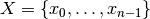.
For the 4-Queens Problem, we have a binary variable
indicating the presence or not of a queen on square
:
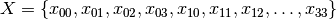
a domain for each variable
For the 4-Queens Problem, each variable
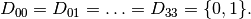
a set of constraints that restrict the values the variables can take simultaneously.
For the 4-Queens Problem, we have a set of constraints that forbid two queens (or more) to share the same row:
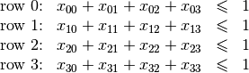
Indeed, these constraints ensure that for each row
at most one variable 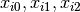 or 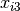 could take the value
. Actually, we could replace the inequalities by equalities because we know that every feasible solution must have a queen on each row[2]. Later, in the section Implementation of a basic model, we will provide another model with different variables and constraints.
As we mentioned earlier, values don’t need to be integers and constraints don’t need to be algebraic equations or inequalities[3].
If we want to optimize, i.e. to minimize or maximize an objective function, we talk about a Constraint Optimization Problem (COP). The objective function can be one of the variables of the problem or a function of some or all the variables. Most of the problems used in this manual fall into this category. In this manual, we’ll discuss among others:
1.4.2. Problems, instances and solutions
We will not go into details about what a mathematical problem exactly is. As an example, we met the n-Queens Problem in the section The 4-Queens Problem. We would like to take the time to differentiate mathematical problems from real problems though. Let’s take an example. Let’s say you are a company and want to give your users the ability to view streets from the comfort of their browsers as if they were physically present in those remote locations. To provide such a service, you might want to scour the globe with special cars and other mobile means to take some pictures. This is a real problem from real life. How do you provide such a service? Mathematical optimization to the rescue! Subdivide this real (and challenging!) problem into smaller ones and translate them into (solvable) mathematical problems:
- Taking pictures? All and well but how do you actually do this? How many pictures do you need to take? At what angle? How do you morph them together and minimize distortion? Etc....
- How do you scour the streets of a city? At what speed? How close to pictured objects? With how many cars? At what time of the day? After covering a street, where should the car head next? What about turns? Etc....
- How do you keep such information on the servers? How do you match the pictures with the correct locations? How do you respond to a user request such that she gets the most relevant information as quickly as possible? Etc....
- ...
Believe it or not, you can translate those questions into mathematical problems. And these (some of them at least) mathematical problems can be (and are!) solved with tools like the or-tools library.
Mathematical problems are a translation of such real problems into mathematical terms. We’ll see many of them in this manual. Interestingly enough, the or-tools CP solver doesn’t have a Model class on its own as the model is constructed in/by the solver itself but you have some classes that relate to the mathematical model the solver is trying to solve. Among them, you have a ModelVisitor class that lets you visit the model and act upon it.
These mathematical problems are sort of theoretical templates. What you want to solve with a computer are specific versions of a problem. For instance, the n-Queens problem with 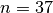 or 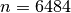, or a Travelling Salesman Problem on a particular graph representing the city of New York. We call these practical materialization of a mathematical problem instances. You try to find mathematical theoretical methods to solve mathematical problems and solve specific instances on your computer[4]. When you ask the CP solver to print a model, you are in fact asking for a specific instance.
A solution of an instance is an assignment of the variables: each variable is assigned a value of its domain. This doesn’t mean that a solution solves your problem: the assignment doesn’t need to respect the constraints! A feasible solution to a CSP or a COP is a feasible assignment: every variable has been assigned a value from its domain in such a way that all the constraints of the model are satisfied. The or-tools CP solver uses the class Assignment to represent a solution. As its mathematical counterpart, it can represent a valid (i.e. a feasible) solution or not. When we have a feasible solution, we’ll talk about a Solution (SolutionCollector and SolutionPool classes or the NextSolution() method for instance) in or-tools although there is no Solution class. The objective value of a feasible solution is the value of the objective function for this solution. In or-tools, the objective function is modeled by the OptimizeVar class, i.e. it is a variable. An optimal solution to a COP is a feasible solution such that there are no other solutions with better objective values. Note that an optimal solution doesn’t need to exist nor is it unique in general. For instance, we’ll see that the n-Queens Problem or the Golomb Ruler Problem both possess several optimal solutions.
Let us emphasize that the or-tools CP-solver deals only with discrete and finite variables, i.e. the values a variable can take are elements of a finite set. If you want to solve a continuous problem, you need to discretize it, i.e. model your problem with variables over a finite domain.
1.4.3. Complexity theory for the hurried reader
If you prefer not to read the next section (or if you want a good preparation to read it!), we have summarized its main ideas:
- problems are divided in two categories[5]: easy ( problems) and hard ( or problems) problems. Hard problems are also called intractable[6] and in general we only can find approximate solutions for such problems[7]. Actually, the question of being able to find exact solutions to hard problems is still open (See the box “The 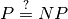 question” below);
1.4.4. Complexity theory in a few lines
Some problems such as the Travelling Salesman Problem (see the chapter Travelling Salesman Problems with constraints: the TSP with time windows) are hard to solve[8]: no one could ever come up with an efficient algorithm to solve this problem. On the other hand, other problems, like the n-Queens Problem (see the chapter Defining search primitives: the n-Queens Problem), are solved very efficiently[9]. In the ‘70s, complexity experts were able to translate this fact into a beautiful complexity theory.
Hard to solve problems are called intractable problems. When you cannot solve an intractable problem to optimality, you can try to find good solutions or/and approximate the problem. In the ‘90s, complexity experts continued their investigation on the complexity of solving problems and developed what is now known as the approximation complexity theory. Both theories are quite new, very interesting and ... not easy to understand. We try the tour the force to introduce the basics of the general complexity theory in a few lines. We willingly kept certain technical details out of the way. These technical details are important and actually without them, you can not construct a complexity theory.
1.4.4.1. Intractability
One of the main difficulties complexity experts faced in the ‘70s was to come up with a theoretical
definition of the complexity
of problems not algorithms. Indeed, it is relatively easy[11] to define a complexity measure of
algorithms but how would you define
the complexity of a problem? If you have an efficient algorithm to solve a problem, you could say that the problem
belongs to the set of easy problems but what about difficult problems?
The fact that we don’t know an efficient algorithm to solve
these doesn’t mean these problems are really difficult. Someone could come up one day with an efficient algorithm.
The solution the experts came up with was to build equivalence classes between problems and define the complexity of
a problem with respect to the complexity of other problems (so the notion of complexity is relative not absolute[10]):
a problem is as hard as a problem  if there exists an efficient transformation
that maps every
instance 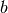 of
problem into an instance 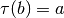 of problem such that if you solve ,
you solve .
if there exists an efficient transformation
that maps every
instance 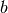 of
problem into an instance 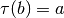 of problem such that if you solve ,
you solve .
Indeed, if there exists an efficient algorithm to solve
problem , you can also solve efficiently problem : transform an instance into into
an instance of problem and solve it with the efficient algorithm known to solve problem
. We write 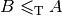 and say that problem reduces efficiently
to problem
and that is an efficient reduction[12].
The search for an efficient algorithm is replaced by the search for an efficient reduction between
instances of two problems to prove “equivalent” complexities.
This main idea leads to a lot of technicalities:
- how to exactly measure the complexity of an algorithm?
- what is an efficient transformation/reduction?
- what are the requirements for such a reduction?
- ...
We don’t answer these interesting questions except the one on efficiency. We consider a reduction
efficient
if there exist a polynomial-time bounded algorithm (this refers to the first question...) that can transform any
instance of problem into an instance of problem such that the solutions
correspond. This also means that we
consider an algorithm efficient if it is polynomially time-bounded (otherwise the efficiency of the
reduction would be useless).
The class of problems that can be efficiently solved is called  , i.e. the class of problems that can be solved by
a polynomial-time bounded algorithm[13][14].
, i.e. the class of problems that can be solved by
a polynomial-time bounded algorithm[13][14].
Some problems are difficult to solve but once you have an answer, it is quite straightforward to verify that a given solution is indeed the solution of the problem. One such problem is the Hamiltonian Path Problem (HPP). Given a graph, is there a path that visits each vertex exactly once? Finding such a path is difficult but verifying that a given path is indeed an Hamiltonian path, i.e. that it passes exactly once through each vertex, can be easily done. Problems for which solutions are easy to verify, i.e. for which this verification can be done in polynomial time, are said to be in the class 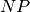[15]. 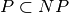 because if you can find a solution in polynomial time, you can also verify this solution in polynomial time (just construct it). Whether we have equality or not between these two sets is one of the major unsolved theoretical questions in Operations Research (see the box “The question” below).
Not all problems in seem to be of equal complexity. Some problems, such as the HPP are as hard as any problem in . Remember our classification of the complexity of problems? This means that every problem in can be transformed in polynomial time into the HPP. The hardest problems of form the class of problems.
How can you prove that all problems in are reducible to a single problem?
Wait a minute. There is an infinite number of problems in , many of which are unknown to us. So, how is it possible to prove that all problems in can be reduced to a single problem?
This can done in two steps:
First, notice that the reduction is transitive. This means that if 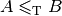 and 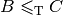 then . Thus, if you have one problem such that all problems 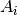 in are reducible to , i.e. 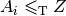, then to prove that all problems in reduce to a problem 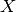, you just need to prove that reduces to . Indeed, if 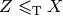 then 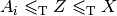[16].
This only works if you can find such problem . Well, such problem has been found, see next point.
The funny fact is that if is in , then 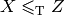 also. Such problems are called and we just showed that if you can solve one problem in efficiently, you can solve all the problems in efficiently!
Several researchers (like for example Cook and Levin in the early ‘70s, see Wikipedia on the Cook-Levin Theorem), were able to prove that all problems in are reducible in polynomial time to the Boolean Satisfiability Problem (SAT) and this problem is of course in .
Proving that the SAT problem is is a major achievement in the complexity theory (all existing proves are highly technical).
Finally, if a problem is as hard as an problem, it is called an problem. Optimization problems, whose decision version belong to , fall into this category.
The next figure summarizes the relations between the complexity classes[17] we have seen as most of the experts believe they stand, i.e. .
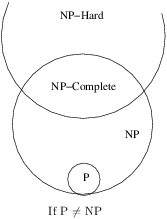The question
The P versus NP problem is a major unsolved problem in Computer Science. Informally, it asks whether every problem whose solution can be quickly verified by a computer () can also be quickly solved by a computer (). It is one of the seven Millennium Prize Problems selected by the Clay Mathematics Institute. The offered prize to the first team to solve this question is $1,000,000!
In 2002 and 2012, W. I. Gasarch (see [Gasarch2002] and [Gasarch2012]) conducted a poll and asked his colleagues what they thought about the question. Here are the results:
| Outcome[18] | % (2002) | % (2012) |
|---|---|---|
| 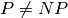 | 61 | 83 |
| 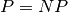 | 9 | 9 |
| No idea | 30 | 8 |
One possible outcome - mentioned by very few - is that this question could be... undecidable, i.e. there is no yes or no answer[19]!
If you are interested in this fascinating subject, we recommend that you read the classical book Computers and Intractability: A Guide to the Theory of NP-Completeness from M. R. Garey and D. S. Johnson (see [Garey1979][20]).
1.4.4.2. The practical aspect of intractability
If you try to solve a problem that is proven to be , you know that it is probably an intractable problem (if ). At least, you know that no one could ever come with an efficient algorithm to solve it and that it is unlikely to happen soon. Thus, you are not able to solve exactly “big” instances of your problem. What can you do?
Maybe there are special cases that can be solved in polynomial time? If you are not interested in those cases and your instances are too big to be solved exactly, even with parallel and/or decomposition algorithms, then there is only one thing to do: approximate your problem and/or the solutions.
You could simplify your problem and/or be satisfied with an approximation, i.e. a solution that is not exact nor optimal. One way to do this in CP is to relax the model by softening some constraints[21]. In a nutshell, you soften a constraint by allowing this constraint to be violated. In a approximate solution where the constraint is violated, you penalize the objective function by a certain amount corresponding to the violation. The bigger the violation, the bigger the penalty. The idea is to find a solution that doesn’t violate too much the soft constraints in the hope that such approximate solution isn’t that different from an exact or optimal solution[22].
Another possible research avenue is to use (meta-)heuristics: algorithms that hopefully return good or even near-optimal solutions. Some of these algorithms give a guarantee on the quality of the produced solutions, some don’t and you just hope for the best. You can also monitor the quality of the solutions by trying to close the optimality gap as much as possible. Given an instance, compute a lower bound and an upper bound on the optimal value . So you know that 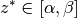. Closing the optimality gap is trying to shrink this interval by producing better upper and lower bounds. If you manage to produce solutions with objective values belonging to this interval, you know how close (or not) these values are from the optimal value of your instance.
As with exact optimization, an approximation complexity theory emerged. It started in the ‘90 and is now a mature domain that improves greatly our comprehension of what we can or can not (theorically) compute. There is a whole zoo of complexity classes. Some problems can be approximated but without any guarantee on the quality of the solutions, others can be approximated with as much precision as you desire but you have to pay the price for this precision: the more precision you want the slower your algorithms will be. For some problems it is hard to find approximations and for others, it is even impossible to find an approximation with any guarantee whatsoever on its quality!
Footnotes
| [1] | We talk here about Time-complexity theory, i.e. we are concerned with the time we need to solve problems. There exist other complexity theories, for instance the Space-complexity theory where we are concerned with the memory space needed to solve problems. |
| [2] | We have to cautious here about the exact definition of the n-Queens Problem. The version we talk about is a CSP where we know that we have to place n queens on a an n x n chessboard so that no two queens attack each other. |
| [3] | Basically, the only requirement for a constraint in CP is its ability to be propagated. See chapter Custom constraints: the alldifferent_except_0 constraint. |
| [4] | Of course, things are never that simple. The difference between a mathematical problem and an instance is not always that clear. You might want to solve generically the n-Queens Problem with a meta-algorithm for instance, or the n-Queens Problem could be viewed as an instance of a broader category of problems. |
| [5] | Stated like this, it sounds pretty obvious but this complexity theory is really subtle and full of beautiful (and useful) results. Actually, most problems of practical interest belong to either categories but these two categories don’t cover all problems. |
| [6] | Intractable problems are problems which in practice take too long to solve exactly, so there is a gap between the theoretical definition (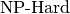 problems) and the practical definition (Intractable problems). |
| [7] | Technically, you could find an exact solution but you would not be able to prove that it is indeed an exact solution in general. |
| [8] | Roughly, we consider a problem to be hard to solve if we need a lot of time to solve it. Read on. |
| [9] | The Travelling Salesman Problem is said to be NP-hard while (a version of) the n-Queens Problem is said to be in P. |
| [10] | Well, for... hard problems. |
| [11] | Well, to a certain degree. You need to know what instances you consider, how these are encoded, what type of machines you use and so on. |
| [12] | The in is in honor of Alan Turing. Different types of efficient reductions exist. |
| [13] | For technical reasons, we don’t compare problems but languages and only consider
decision problems, i.e. problems that have a yes/no answer. The Subset Sum Problem is such a problem.
Given a finite set of integers, is there a non-empty subset whose sum is zero? The answer is yes or no. By extension,
we say an optimization problem is in , if its equivalent decision problem is in . For instance,
the Chinese Postman Problem (CPP) is an optimization problem where one wants to find a minimal route
traversing all edges
of a graph. The equivalent decision problem is ” Is it possible to find a feasible route with cost less or equal
to ? ” where is a given integer. By extension, we will say that the CPP
is in (we should rather say that the CPP is in 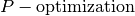). |
| [14] | This discussion is really about theoretical difficulties of problems. Some problems that are theoretically easy (such as solving a Linear System or a Linear Program) are difficult in practice and conversely, some problems that are theoretically difficult, such as the Knapsack Problem are routinely solved on big instances. |
| [15] | The abbreviation refers to non-deterministic polynomial time, not to non-polynomial. |
| [16] | If you want to prove that a problem is (see below), take a problem that is , like the HPP, and reduce it to your problem. This might sound easy but it is not! |
| [17] | Be aware that there are many more complexity classes. |
| [18] | We agglomerated all other answers into a category No idea although the poll allowed people to fully express themselves (some answered “I don’t care” for instance). The first poll (2002) involved 100 researchers while the second one involved 152 researchers. |
| [19] | See Undecidable problem on Wikipedia. |
| [20] | This book was written in 1979 and so misses the last developments of the complexity theory but it clearly explains the NP-Completeness theory and provides a long list of NP-Complete problems. |
| [21] | For MIP practitioners, this is equivalent to Lagrangian Relaxation. |
| [22] | In the case of optimization, a solution that isn’t that different means a solution that has a good objective value, preferably close to the optimum. |
Bibliography
| [Gasarch2002] |
|
| [Gasarch2012] |
|
| [Garey1979] | Garey, M. R. and Johnson D. S. Computers and Intractability: A Guide to the Theory of NP-Completeness, 1979, W. H. Freeman & Co, New York, NY, USA, pp 338. |
Google or-tools |
User's Manual
Google search
Welcome
Tutorial examples
Current chapter
1. Introduction to constraint programming
Previous section
Next section
1.5. The three-stage method: describe, model and solve